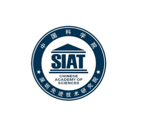
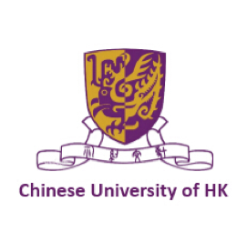
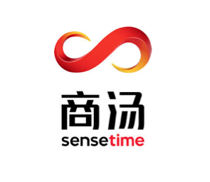
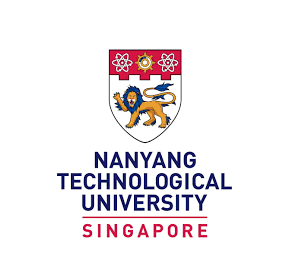

About Us
课题组近年来已经获得数千万元的科研资源投入，包括教育部、国家自然科学基金、上海市科委重大科技专项、复旦大学211专项，以及校企合作项目30余项，产生了一大批具有原创性、自主知识产权的研究成果，并研制了 “自主心智发育机器人－复旦I号”、 “复娃”、“爱家一号”、“海宝机器人”、“中西医健康管理机器人”等6代智能服务机器人。
Latest Publications

Collaboration
SIAT
SIAT aims to enhance the innovative capacity of the equipment manufacturing and service industries in the Guangdong-Hong Kong region, promote the development of emerging industries possessing their own proprietary intellectual property, and become a world-class industrial research institute.
CUHK
The CUHK Multimedia Lab (MMLab) is one of the pioneering institutes on deep learning. In GPU Technology Conference (GTC) 2016, a world-wide technology summit, MMlab is recognized as one of the top ten AI pioneers, and listed together with top research groups in the world (e.g. MIT, Stanford, Berkeley, and Univ. of Toronto). Today, it remains one of the most active research labs in computer vision and deep learning, publishing over 40 papers on top conferences (CVPR/ICCV/ECCV/NIPS) every year.
SenseTime Inc.
SenseTime is a global company focused on developing innovative AI technologies that positively contribute to economies, society and humanity. With roots in the academic world, SenseTime invest in fundamental research to further understanding and advance the state of art in AI technology. SenseTime is a global team of talented individuals with over half dedicated to research and development activities. This has made it a leading global AI algorithm provider and one of the most prolific contributors of related papers in the research community.
NTU
The Nanyang Technological University is the second oldest public autonomous research university in Singapore. With a population of 33,500 students and 10,000 faculty and staff, NTU is the second largest university in Singapore.